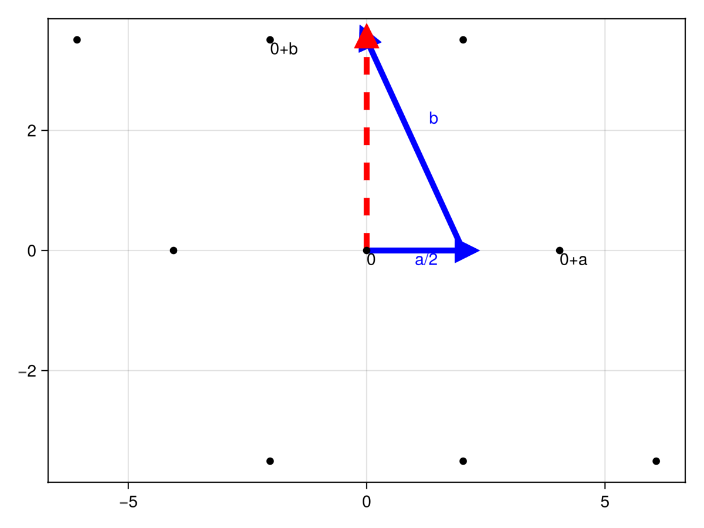

Download this example as Jupyter notebook or Julia script.
4. Generalized spin dynamics of FeI‚ÇÇ at finite T
using Sunny, LinearAlgebra, GLMakieIn the previous FeI‚ÇÇ tutorial, we used multi-flavor spin wave theory to calculate the dynamical structure factor. Here, we perform a similar calculation using a generalized classical spin dynamics that captures the coupled dynamics of spin dipoles and quadrupoles for configurations sampled at finite temperature.
Compared to spin wave theory, simulations using classical dynamics will be slower and limited in $k$-space resolution. However, they make it is possible to study temperature driven phase transitions. They may also be used to study out-of-equilibrium systems (e.g., relaxation of spin glasses), or systems with quenched inhomogeneities that require large simulation volumes.
In this tutorial, we show how to study the finite temperature dynamics of FeI‚ÇÇ using the classical approach. It is important to stress that the estimation of $S(ùê™,œâ)$ with classical dynamics is fundamentally a Monte Carlo calculation: sample spin configurations are drawn from thermal equilibrium and used as initial conditions for generating dissipationless trajectories. The correlations of these trajectories are then averaged and used to calculate scattering intensities. It is therefore important to ensure that the initial spin configurations are sampled appropriately and that sufficient statistics are collected. We will demonstrate one approach here.
As an overview, we will:
- Identify the ground state.
- Measure correlation data describing the excitations around that ground state.
- Use the correlation data to compute scattering intensities.
To begin, please follow our previous tutorial to initialize a FeI‚ÇÇ sys with lattice dimensions $4×4×4$.
sysSystem [SU(3)]
Lattice (4×4×4)×1
Energy per site -353/250
Finding a ground state
As previously observed, direct energy minimization is susceptible to trapping in a local energy minimum.
randomize_spins!(sys)
minimize_energy!(sys)
plot_spins(sys; color=[s[3] for s in sys.dipoles])
Alternatively, one can search for the ordered state by sampling spin configurations from thermal equilibrium. Sunny supports this via a Langevin dynamics of SU(N) coherent states. This dynamics involves a dimensionless damping magnitude and target temperature kT for thermal fluctuations.
kT = 0.2 # Temperature in meV
langevin = Langevin(; damping=0.2, kT)Langevin(<missing>; damping=0.2, kT=0.2)
Use suggest_timestep to select an integration timestep for the given error tolerance, e.g. tol=1e-2. The spin configuration in sys should ideally be relaxed into thermal equilibrium, but the current, energy-minimized configuration will also work reasonably well.
suggest_timestep(sys, langevin; tol=1e-2)
langevin.dt = 0.027;Consider dt ≈ 0.02734 for this spin configuration at tol = 0.01.Sample spin configurations using Langevin dynamics. We have carefully selected a temperature of 0.2 eV that is below the ordering temperature, but large enough to that the dynamics can overcome local energy barriers and annihilate defects.
for _ in 1:10_000
step!(sys, langevin)
endCalling suggest_timestep shows that thermalization has not substantially altered the suggested dt.
suggest_timestep(sys, langevin; tol=1e-2)Consider dt ≈ 0.03196 for this spin configuration at tol = 0.01. Current value is dt = 0.027.Although thermal fluctuations are present, the correct antiferromagnetic order (2 up, 2 down) has been found.
plot_spins(sys; color=[s[3] for s in sys.dipoles])
For other phases, it can be much harder to find thermal equilibrium, and more complicated sampling procedures may be necessary.
Calculating Thermal-Averaged Correlations $\langle S^{\alpha\beta}(ùê™,œâ)\rangle$
Our aim is to study the classical spin dynamics for states sampled in thermal equilibrium. To minimize finite size effects, and achieve sufficient momentum space resolution, we should significantly enlarge the system volume. The function resize_supercell takes new dimensions as multiples of the unit cell lattice vectors.
sys_large = resize_supercell(sys, (16,16,4)) # 16x16x4 copies of the original unit cell
plot_spins(sys_large; color=[s[3] for s in sys_large.dipoles])
Now we will re-thermalize the system to a configuration just above the ordering temperature. Sunny expects energies in meV by default, so we use meV_per_K to convert from kelvin.
kT = 3.5 * meV_per_K # 3.5K ≈ 0.30 meV
langevin.kT = kT
for _ in 1:10_000
step!(sys_large, langevin)
endWith this increase in temperature, the suggested timestep has increased slightly.
suggest_timestep(sys_large, langevin; tol=1e-2)
langevin.dt = 0.040;Consider dt ≈ 0.04039 for this spin configuration at tol = 0.01. Current value is dt = 0.027.The next step is to collect correlation data $S^{\alpha\beta}$. This will involve sampling spin configurations from thermal equilibrium, and then integrating an energy-conserving generalized classical spin dynamics to collect Fourier-space information about normal modes. Quantization of these modes yields the magnons, and the associated dynamical spin-spin correlations can be compared with neutron scattering intensities $S^{\alpha\beta}(q,\omega)$. Because this a real-space calculation, data is only available for discrete $q$ modes (the resolution scales like inverse system size).
The function dynamical_correlations creates an object to store sampled correlations. The integration timestep dt used for measuring dynamical correlations can be somewhat larger than that used by the Langevin dynamics. We must also specify nω and ωmax, which determine the frequencies over which intensity data will be collected.
dt = 2*langevin.dt
ωmax = 7.5 # Maximum energy to resolve (meV)
nω = 120 # Number of energies to resolve
sc = dynamical_correlations(sys_large; dt, nω, ωmax)SampledCorrelations (33.615 MiB)
[S(q,ω) | nω = 120, Δω = 0.0657 | 0 sample]
Lattice: (16, 16, 4)×1
6 correlations in SU(3) mode:
╔ ⬤ ⬤ ⬤ Sx
║ ⋅ ⬤ ⬤ Sy
╚ ⋅ ⋅ ⬤ Sz
The function add_sample! will collect data by running a dynamical trajectory starting from the current system configuration.
add_sample!(sc, sys_large)To collect additional data, it is required to re-sample the spin configuration from the thermal distribution. For efficiency, the dynamics should be run long enough that consecutive samples are uncorrelated.
for _ in 1:2
for _ in 1:1000 # Enough steps to decorrelate spins
step!(sys_large, langevin)
end
add_sample!(sc, sys_large)
endNow, sc has more samples included:
scSampledCorrelations (33.615 MiB)
[S(q,ω) | nω = 120, Δω = 0.0657 | 3 samples]
Lattice: (16, 16, 4)×1
6 correlations in SU(3) mode:
╔ ⬤ ⬤ ⬤ Sx
║ ⋅ ⬤ ⬤ Sy
╚ ⋅ ⋅ ⬤ Sz
Computing Scattering Intensities
With the thermally-averaged correlation data $\langle S^{\alpha\beta}(q,\omega)\rangle$ in hand, we now need to specify how to extract a scattering intensity from this information. This is done by constructing an intensity_formula. By way of example, we will use a formula which computes the trace of the structure factor and applies a classical-to-quantum temperature-dependent rescaling kT.
formula = intensity_formula(sc, :trace; kT)Classical Scattering Intensity Formula
At discrete scattering modes S = S[ix_q,ix_ω], use:
Intensity[ix_q,ix_ω] = Intensity[ix_q,ix_ω] = Tr S
No form factors specified
Temperature corrected (kT = 0.3016066641750812) ✓
Recall that $\langle S^{\alpha\beta}(q,\omega)\rangle$ is only available at certain discrete $q$ values, due to the finite lattice size. There are two basic approaches to handling this discreteness. The first approach is to interpolate between the available data using intensities_interpolated. For example, we can plot single-$q$ slices at (0,0,0) and (π,π,π) using this method:
qs = [[0, 0, 0], [0.5, 0.5, 0.5]]
is = intensities_interpolated(sc, qs, formula; interpolation = :round)
ωs = available_energies(sc)
fig = lines(ωs, is[1,:]; axis=(xlabel="meV", ylabel="Intensity"), label="(0,0,0)")
lines!(ωs, is[2,:]; label="(π,π,π)")
axislegend()
fig
The resolution in energy can be improved by increasing nω, and the statistical accuracy can be improved by collecting additional samples from the thermal equilibrium.
For real calculations, one often wants to apply further corrections and more accurate formulas. Here, we apply FormFactor corrections appropriate for Fe2 magnetic ions, and a dipole polarization correction :perp.
formfactors = [FormFactor("Fe2"; g_lande=3/2)]
new_formula = intensity_formula(sc, :perp; kT, formfactors = formfactors)Classical Scattering Intensity Formula
At discrete scattering modes S = S[ix_q,ix_ω], use:
Intensity[ix_q,ix_ω] = Intensity[ix_q,ix_ω] = ∑_ij (I - Q⊗Q){i,j} S{i,j}
(i,j = Sx,Sy,Sz)
Form factors included in S ✓
Temperature corrected (kT = 0.3016066641750812) ✓
Frequently, one wants to extract energy intensities along lines that connect special wave vectors–a so-called "spaghetti plot". The function reciprocal_space_path creates an appropriate horizontal axis for this plot by linearly sampling between provided $q$-points with a given sample density. The number of sample points between two wavevectors q1 and q2 is given by dist*density where dist = norm(cryst.recipvecs * (q1 - q2)) is measured in the global frame.
points = [[0, 0, 0], # List of wave vectors that define a path
[1, 0, 0],
[0, 1, 0],
[1/2, 0, 0],
[0, 1, 0],
[0, 0, 0]]
density = 40
path, xticks = reciprocal_space_path(cryst, points, density);Again using intensities_interpolated, we can evaluate the (interpolated) intensity at each point on the path. Since scattering intensities are only available at a certain discrete $(Q,\omega)$ points, the intensity on the path can be calculated by interpolating between these discrete points:
is_interpolated = intensities_interpolated(sc, path, new_formula;
interpolation = :linear, # Interpolate between available wave vectors
);
# Add artificial broadening
is_interpolated_broadened = broaden_energy(sc, is, (ω, ω₀) -> lorentzian(fwhm=0.1)(ω-ω₀));The second approach to handle the discreteness of the data is to bin the intensity at the discrete points into the bins of a histogram. First, the five sub-histograms are set up using reciprocal_space_path_bins in analogy to reciprocal_space_path.
cut_width = 0.3
density = 15
paramsList, markers, ranges = reciprocal_space_path_bins(sc,points,density,cut_width);Then, the intensity data is computed using intensities_binned for each sub-histogram:
total_bins = ranges[end][end]
energy_bins = paramsList[1].numbins[4]
is_binned = zeros(Float64,total_bins,energy_bins)
integrated_kernel = integrated_lorentzian(fwhm=0.1) # Lorentzian broadening
for k in eachindex(paramsList)
bin_data, counts = intensities_binned(sc,paramsList[k], new_formula;
integrated_kernel = integrated_kernel
)
is_binned[ranges[k],:] = bin_data[:,1,1,:] ./ counts[:,1,1,:]
endThe graph produced by interpolating (top) is similar to the one produced by binning (bottom):
fig = Figure()
ax_top = Axis(fig[1,1],ylabel = "meV",xticklabelrotation=π/8,xticklabelsize=12;xticks)
ax_bottom = Axis(fig[2,1],ylabel = "meV",xticks = (markers, string.(points)),xticklabelrotation=π/8,xticklabelsize=12)
heatmap!(ax_top,1:size(is_interpolated,1), ωs, is_interpolated;
colorrange=(0.0,0.07),
)
heatmap!(ax_bottom,1:size(is_binned,1), ωs, is_binned;
colorrange=(0.0,0.05),
)
figNote that we have clipped the colors in order to make the higher-energy excitations more visible.
Unconventional RLU Systems and Constant Energy Cuts
Often it is useful to plot cuts across multiple wave vectors but at a single energy. We'll pick an energy,
ωidx = 60
target_ω = ωs[ωidx]3.8776980452258947and take a constant-energy cut at that energy. The most straightforward way is to make a plot whose axes are aligned with the conventional reciprocal lattice of the crystal. This is accomplished using unit_resolution_binning_parameters:
params = unit_resolution_binning_parameters(sc)
params.binstart[1:2] .= -1 # Expand plot range slightly
# Set energy integration range
omega_width = 0.3
params.binstart[4] = target_ω - (omega_width/2)
params.binend[4] = target_ω # `binend` should be inside (e.g. at the center) of the range
params.binwidth[4] = omega_width
integrate_axes!(params, axes = 3) # Integrate out z direction entirely
paramsBinning Parameters
⊡ 31 bins from -1.000 to +0.969 along [+1.00 dx] (Δ = 0.064)
⊡ 31 bins from -1.000 to +0.969 along [+1.00 dy] (Δ = 0.064)
∫ Integrated from -0.125 to +1.625 along [+1.00 dz] (Δ = 1.750)
∫ Integrated from +3.728 to +4.028 along [+1.00 dE] (Δ = 0.300)
In each of the following plots, black dashed lines represent (direct) lattice vectors. Since these plots are in reciprocal space, direct lattice vectors are represented as covectors (i.e. coordinate grids) instead of as arrows.
is, counts = intensities_binned(sc,params,new_formula)
fig = Figure()
ax = Axis(fig[1,1];
title="Δω=0.3 meV (Binned)", aspect=true,
xlabel = "[H, 0, 0]",
ylabel = "[0, K, 0]"
)
bcs = axes_bincenters(params)
hm = heatmap!(ax,bcs[1],bcs[2],is[:,:,1,1] ./ counts[:,:,1,1])
add_lines!(ax,params)
Colorbar(fig[1,2], hm);
figIn the above plot, the dashed-line (direct) lattice vectors are clearly orthogonal. However, we know that in real space, the lattice vectors $a$ and $b$ are not orthogonal, but rather point along the edges of a hexagon (see lower left corner):

Thus, plotting the direct lattice vectors as orthogonal (even in reciprocal space) is somewhat misleading. Worse yet, the [H,0,0] by [0,K,0] plot apparently loses the 6-fold symmetry of the crystal! Lastly, if one works out the components of the real-space metric with respect to the axes of the plot, one finds that there are non-zero off-diagonal entries,
latvecs = sys.crystal.latvecs
metric = latvecs' * I(3) * latvecs3×3 Matrix{Float64}:
16.4035 -8.20174 0.0
-8.20174 16.4035 0.0
0.0 0.0 45.5914so real-space rotations and angles map into reciprocal space rotations angles in a complicated way.
To resolve these important issues, we want to use axes which are orthogonal (i.e. they diagonalize the metric and solve all of the problems just mentioned). The canonical choice is to use the combination $\frac{1}{2}a + b$ of lattice vectors (equiv. $a^* - \frac{1}{2}b^*$), which is orthogonal to $a$:
(latvecs * [1/2,1,0]) ⋅ (latvecs * [1,0,0]) == 0trueThis new vector $\frac{1}{2}a+b$ is visibly orthogonal to $a$ in real space:
To use "projection onto the new vector" as a histogram axis, only a single change is needed to the binning parameters. The second covector (previously $b$) must be swapped out for $\frac{1}{2}a + b$ (recall that reciprocal space covectors, such as those used in BinningParameters correspond to direct space vectors).
params.covectors[2,1:3] = [1/2,1,0] # [1/2,1,0] times [a;b;c] is (a/2 + b)Binning Parameters
⊡ 31 bins from -1.000 to +0.969 along [+1.00 dx] (Δ = 0.064)
⊡ 31 bins from -1.000 to +0.969 along [+0.50 dx +1.00 dy] (Δ = 0.057)
∫ Integrated from -0.125 to +1.625 along [+1.00 dz] (Δ = 1.750)
∫ Integrated from +3.728 to +4.028 along [+1.00 dE] (Δ = 0.300)
The second axis of the histogram now agrees with what is conventionally labelled as [H,-H/2,0].
Note that, although $\frac{1}{2}a+b$ is orthogonal to $a$, it is not the same length as $a$. Instead, it is sqrt(3/4) times as long. Note the unsymmetrical axes labels in the plots that follow as a direct result of this!
# Zoom out horizontal axis
params.binstart[1], params.binend[1] = -2, 2
# Adjust vertical axis bounds to account for
# length of a/2 + b
params.binstart[2], params.binend[2] = -2 * sqrt(3/4), 2 * sqrt(3/4)
# Re-compute in the new coordinate system
is, counts = intensities_binned(sc,params,new_formula)
add_lines!(ax_right,params)For comparison purposes, we will make the same plot using intensities_interpolated to emulate zero-width bins. This time, it's more convenient to think in terms of reciprocal vectors $a^*$ and $b^*$. Now, our coordinate transformation consists of establishing a new, orthogonal basis to specify our wave vectors: $a^* - \frac{1}{2}b^*$, $b^*$ and $c^*$. Writing this in matrix form allows us to sample a rectilinear grid of wave vectors in this frame. Finally, we'll convert these back into the original RLU system for input into Sunny.
# New basis matrix
A = [1 0 0
-1/2 1 0
0 0 1]
# Define our grid of wave vectors
npoints = 60
as = range(-2, 2, npoints)
bs = range(-3/√3, 3/√3, npoints)
qs_ortho = [[a, b, 0] for a in as, b in bs]
# Convert to original RLU system for input to Sunny
qs = [A * q for q in qs_ortho]
# Use interpolation to get intensities
is = intensities_interpolated(sc, qs, new_formula; interpolation=:linear)
add_lines!(ax_left,params)
figNow, not only are the dashed-line lattice vectors no longer misleadingly orthogonal, but the six-fold symmetry has been restored as well! Further, the metric has been diagonalized:
metric = (latvecs * inv(A'))' * I(3) * (latvecs * inv(A'))3×3 Matrix{Float64}:
16.4035 0.0 0.0
0.0 12.3026 0.0
0.0 0.0 45.5914Finally, we note that instantaneous structure factor data, $ùíÆ(ùê™)$, can be obtained from a dynamic structure factor with instant_intensities_interpolated. Here we'll reuse the grid of wave vectors we generated above.
is_static = instant_intensities_interpolated(sc, qs, new_formula; interpolation = :linear)
hm = heatmap(as, bs, is_static;
axis=(
title="Instantaneous Structure Factor",
xlabel = "[H, -1/2H, 0]",
ylabel = "[0, K, 0]",
aspect=true
)
)
Colorbar(hm.figure[1,2], hm.plot)
hm